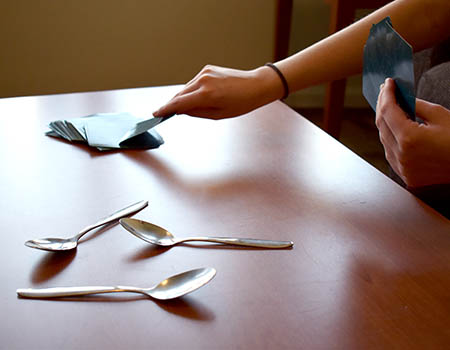
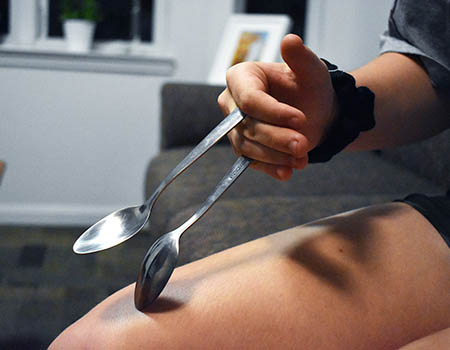
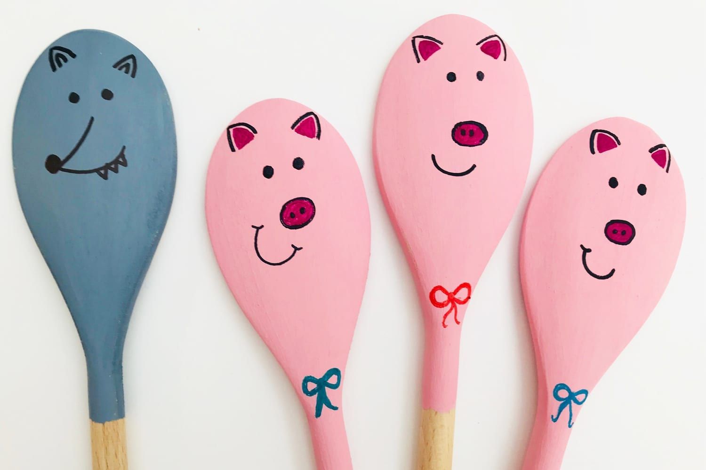
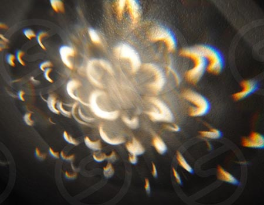

Bright Idea of the Week

Alyssa, 9
Egg-Spoon Race
“You can race your friends while balancing eggs on spoons. It’s harder than you think!”
“You can race your friends while balancing eggs on spoons. It’s harder than you think!”
Spoons is a fun card game that you can play. All you need is a deck of cards, some spoons, and a few players.
To set up for the game, you need one less spoon than there are players. Each player will get 4 cards to keep in their hand.
Spoons can be used a a cool instrument too! They make an awesome clanging sound when they hit each other. All you need is two spoons and you can make a beat to a song.
Spoons are a common instrument in folk music all around the world. Isn’t is crazy that you probably have some world famous instruments right in your kitchen?
To play the spoons, hold the spoons in between your fingers so that the backs of the spoons face each other.
There are different ways to hold the spoons, so do it however you feel comfortable
Give the spoons some space so that way they have room to hit each other when you shake your hand. Don’t worry if you don’t get it right the first time! It may take some practice.
You might’ve seen Forky from Toy Story 4 and thought, “I bet I can make something like that.” If you did think that, you were right. You can make your own toy friend with a spoon.
The limit is your imagination on this one. You can make the spoons into little animals or little snowmen. You can make it into whatever you want.
Metal spoons are great for reflecting light. You can make all kinds of pretty light art using some spoons.
To get the best results, you will need a dark space, a flashlight, and of course some metal spoons!
Shine the light into the spoons and see how it reflects onto the walls. You can play around by shining it onto different parts of the spoon or by arranging more than one spoon to make some pretty light art.
